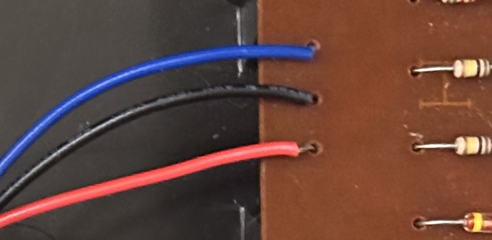
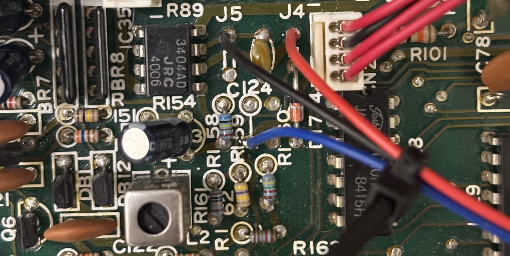
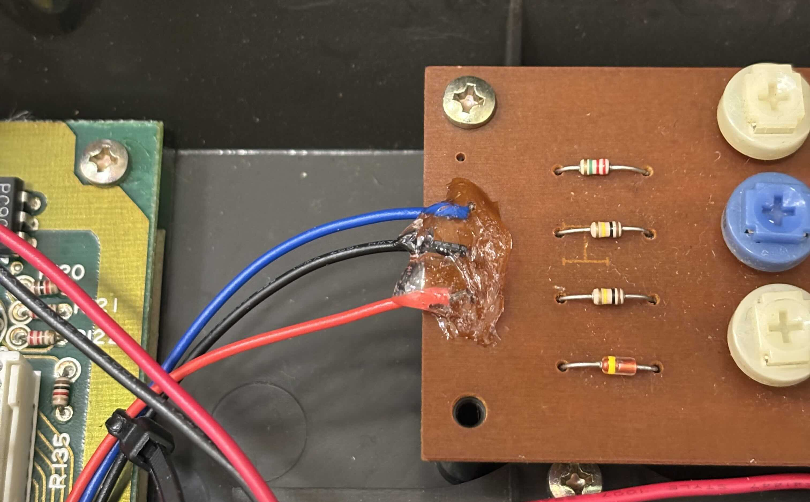

The Korg Poly 800 is a classic mid-tier 80s synth. It uses a rare mix of analog and digital sound generation to make a sort of square-wave organ not seen in many other synthesizers. Over the past couple years the tuning slider of mine has intermittently ceased functioning.
A quick Kagi search reveals several people have had similar issues with the amplifier's pitch bend and tuning. A redditor wrote (with my emphasis):
My Korg Poly 800 II plays really nicely most of the time, but it occasionally does this thing where it will jump around in pitch, where each new press of the keys will make a very different pitch, kinda like someone is messing with the tune slider as you are playing. This only seems to happen if you play chords harder than normal. It's so annoying because apart from this it works beautifully, and I really like it. Is this a known or common problem? Any idea where I should start looking to solve this?
The replies suggested that the issue could be due to potentiometers wearing out or gunk and dust building up in the joystick mechanism.
The user said however that the problems only happened if you play chords harder than normal
, which doesn't seem likely to cause the potentiometer's misfire.
Gunk building up in the joystick mechanism seems even less likely as while it looks nasty and may cause mechanical issues and poor tactile feedback, it would be unlikely to cause such extreme pitch issues without even actuating the joystick.
After cracking the synth open and staring at the schematics for about an hour, I was able to trace out the signal path of the pitch control. The tuning slider and pitch bend axis of the joystick both create DC voltages which control the frequency of an oscillator. This is then converted into a clock signal and transferred to the digitally controlled oscillators, which make the music.
Tuning these inputs was evidently a last-minute thought as the trimming potentiometers for tuning, pitch bend, and vibrator were included on an auxiliary board connected by jumper wires soldered directly to the main board, contrasting the convenient header connectors going between the other boards. These jumper wires are thin-gauge stranded wire and weren't secured in any way when I opened my keyboard. Merely by moving these wires, I was able to further disable the pitch bend and fix the original tuning problem.
There wires are not fit for purpose, but I didn't feel like replacing them. Instead, I resoldered their connections, added strain relief with a diligently placed glob of rubber cement, and zip-tied them together. If I had it, I would've used hot glue rather than rubber cement, which takes time to cure. In my keyboard at least, the other wires don't seem to get too close to touching the cement, so this was not an issue.
I'm writing this just after finishing the fix, so hopefully it will work. I was not brave enough to violently shake the poor thing to see if the connections held.